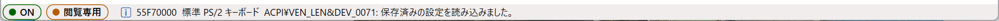
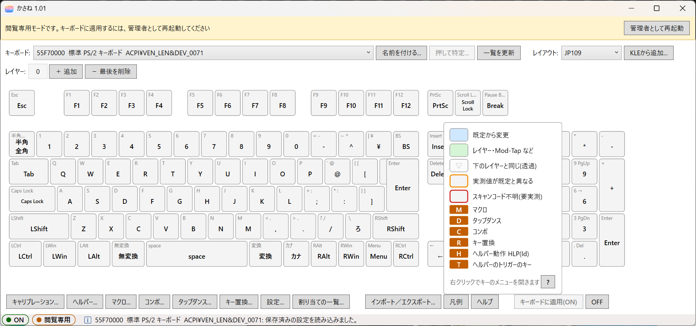

5. Editor Basics
kasane (the editor) is the app where you edit what each key on your keyboard does, and apply it to the keyboard. This chapter explains the parts of the main window, and the basic flow from swapping keys to checking that they work. The key assignment screen, and editing macros and the like, are explained in later chapters.
Starting the editor
Left-click kasane in the applet folder of the Start menu. If you want to start with administrator rights from the beginning, right-click it and start with Run as administrator. You can also open it by left-clicking the tray icon.
Applying to the keyboard, calibration (single keys and all keys), and identifying a keyboard need administrator rights. The driver restricts them so that an app with ordinary user rights cannot spy on your key input or slip key input in without your knowledge.
Read-only mode
If you start normally, without administrator rights, a yellow bar appears at the top of the window and shows "Read-only mode". In this mode, the buttons for applying to the keyboard, calibration, and identifying a keyboard cannot be used (hold the mouse over the bar to see this explanation). You can still edit, export, and use OFF in read-only mode.

Press Restart as administrator on the bar to reopen with administrator rights. If a confirmation screen (UAC) appears, allow it. If there are unsaved settings, a confirmation dialog may appear. Go on with OK or Cancel as needed.
After it reopens, the bar is gone, and Calibrate..., Press to identify..., and Apply to keyboard (ON) can be pressed.

The parts of the window

| No. | Part | Contents |
|---|---|---|
| 1 | Title bar | The product name, the version, and the mark for unsaved changes (*) |
| 2 | Keyboard row and layout | Choose the keyboard to configure (Rename..., Press to identify..., Refresh list). On the right, choose the keyboard's layout (Add from KLE...) |
| 3 | Layer row | The list of layers. + Add, − Remove last |
| 4 | Keyboard diagram | Click to change a key's assignment. Right-click for a menu |
| 5 | Buttons at the bottom | Calibrate..., Helper..., Macros..., Combos..., Tap dances..., Key overrides..., Assignment list..., Settings..., Import / Export..., Legend, Help, Apply to keyboard (ON), OFF |
| 6 | Status bar | On the left, the status marks (driver state, not applied, read-only, editing); on the right, the result of an operation |
Title bar
The product name and the version are shown (for example, kasane 1.01). A * is added when there are unsaved changes.
The status marks in the status bar
At the left of the status bar at the very bottom of the window, marks made of a colored dot and a short word are lined up. Hold the mouse over one to see a detailed explanation. When "remapping happens even though it is OFF" or "I set it up but it has no effect", look here first.

| Mark | Color | Meaning |
|---|---|---|
| ON | Green | The settings are in the driver and remapping is working |
| OFF | Gray | The settings are kept, but remapping is stopped |
| No settings | Gray | The driver has no settings |
| Keyboard not connected | Gray | The selected keyboard is not connected right now (you can only edit) |
| Not connected | Red | Cannot connect to the driver (you can only edit and export) |
| Not applied | Orange | The changes on the screen have not been applied to the keyboard yet |
| Read-only | Orange | You are not running as administrator |
| Editing | Blue | A macro or combo editing screen, or the key assignment screen, is open. While it is open, you cannot switch keyboards or layouts, import, or add or remove layers |
To the right of the marks, the result of an operation is shown. The symbol at the start shows the kind. ℹ is information (it fades after a few seconds), ⚠ is a warning, and ✖ is an error. Warnings and errors stay until the next message appears.
When an input has a mistake, ✖ is put at the start of the sentence and the border of the key code box turns red. In editing screens such as macros, ⚠ is put on the row with the numbered mistake.
Choosing the keyboard to configure
From the Keyboard list, choose the keyboard you want to configure. Each row is shown in this order (items that do not exist are left out).
UniqId (8 digits), the name you gave it, the name on Windows (the Device Manager name or the product name), the hardware ID

- Press to identify...: use this when you cannot tell which keyboard is the one you want, for example when an external keyboard is connected to a laptop. A small window opens, so press any one key on the keyboard you want. The keyboard you pressed is selected. The key you pressed is not sent to Windows. Administrator rights are required.
- Rename...: gives the selected keyboard an easy-to-recognize name (for example, "Work"). If you leave it empty, the name is removed. The name is used only in the display and in exported files, and has nothing to do with how keys behave.
- Refresh list: gets the keyboard list again.
- If the list shows only "(Driver not connected: edit and export only)", the driver is not running or the license is not active. See 16. Troubleshooting and Known Limitations.
Checking the layout
Check that Layout matches your keyboard.
| Layout | Keyboard |
|---|---|
JP109 |
Japanese (JIS) |
US104 |
English (US) |
10KEY |
A numeric keypad alone (17 keys) |
The first time, JP109 or US104 is selected to match the Windows display language. If it is wrong, change it. When you change it, a confirmation says that the assignments will be reset; press OK.
Adding a layout from KLE
For a layout that is not among the bundled layouts (ISO, 60%, special layouts, and so on), you can import a layout made with Keyboard Layout Editor (KLE) and use it.
- Make the layout on the KLE site. Save the contents of the Raw data tab to a JSON file (Download JSON also works). Layouts with rotated keys can be imported too.
- Press Add from KLE.... On the KLE import screen, choose the file with Choose File... and press Import.
- The list shows the default key code of each key, estimated from its label and position (the columns are Label, Key code, State, and Note). Green means confirmed, yellow means estimated, and red means unassigned. For keys whose estimate is wrong, and for red keys, rewrite Key code in the list, or choose with Choose from list.... You can save and use the layout with red keys left as they are, but those keys need calibration.
- Give it a Name (letters, digits, and hyphens) and press Save and use. It appears in the Layout list.

You cannot use the same name as a bundled layout. If you save again with the same name, it is overwritten.
Swapping keys
As an example, set up the following swap.
| Keyboard | Keys to swap |
|---|---|
| JIS | The Eisu key (the key marked Caps Lock 英数) and left Ctrl |
| US | Caps Lock and left Ctrl |
After checking that Layer is 0, do the following for JIS.
- Click the Eisu (Caps Lock) key in the keyboard diagram.
- In the list at the left of the screen that opens, choose Modifiers, press LCtrl (KC_LCTRL), and press OK.
- Click the Left Ctrl (LCtrl) key in the keyboard diagram.
- In the list at the left, choose Symbols / Editing, press Caps (KC_CAPSLOCK), and press OK.
For US, use the same steps: set Caps Lock to KC_LCTRL and Left Ctrl to KC_CAPSLOCK.
The changed keys turn blue, and the new action (LCtrl, Caps) is shown in the center. For the details of the key assignment screen, see 8. Assigning Keys.

If you make a mistake, right-click the key and choose Restore this layer's assignment.
Reading the keyboard diagram
The small characters at the upper left of a key are the key's legend, and the large characters in the center are the action currently assigned to the key. A key you have not changed is the same as its legend.
| Color or mark | Meaning |
|---|---|
| Blue | A key whose assignment you changed |
| Green | A key with an action such as a layer or Mod-Tap assigned |
| Orange border | A key whose value measured by calibration differs from the standard |
| Red border | A key that cannot be identified (unknown scan code) |
| ▽ | Transparent (uses the assignment of the layer below) |
| M at the lower right | A macro (the assignment is MACRO(n)) |
| D at the lower right | A tap dance (TAPDANCE(n)) |
| C at the lower right | A key that is part of a combo (shown on every layer) |
| R at the lower right | A key that is the target of a key override (shown on the layer that produces that key) |
| H at the lower right | A helper action (the assignment is HLP(Id)). Hold the mouse over it to see the action's name and contents |
| T at the lower right | A helper trigger key. Shown when the key that this key sends has a trigger (the Helper actions tab of Settings). Hold the mouse over it to see the trigger's contents |
The marks are lined up in the order M, D, C, R, H, T. Press Legend at the bottom of the window to see samples of the colors and marks. When you hold the mouse over a key, its contents are shown (for example, "Key override 3: while holding MOD_LSFT → KC_Z").

Macros..., Combos..., Tap dances..., and Key overrides... at the bottom of the window show the number of definitions (for example, Macros(2)...). When a feature is turned OFF in the settings dialog, it is shown like (2・OFF). The definitions exist, but they do not work.
The assignment list (text)
Press Assignment list... at the bottom of the window to see the assignments you changed as text, one per line. Things that are easy to miss in the keyboard diagram, such as keys on upper layers and the contents of combos, key overrides, and macros, can be checked all together.
## Layer 0
key Caps -> Alt+半/全 : LALT(KC_ZKHK)
## Key overrides
override 1 "Ctrl-1": Ctrl+1 -> Macro 0 : MOD_LCTL + KC_1 -> MACRO(0)
# override 2: Shift+P -> Macro 1 "apple" : MOD_LSFT + KC_P -> MACRO(1)
- For layer 0, only keys changed from their legend are shown. For layer 1 and above, only keys that are not ▽ (transparent) are shown.
- A line has the form "key -> action : original key code". Within the same heading, the positions of
->and:are aligned. Japanese characters are aligned as two half-width characters, so when you paste the list into Notepad or the like, view it in a monospaced font such as MS Gothic. - The original key code is useful when you ask for support. If you paste this list, your settings are communicated as they are.
- All layers (layer 0, 1, 2…) are shown in order. Combos, tap dances, key overrides, macros, NICOLA, helper actions (including triggers), rules for the foreground app, and IME-linked layers are shown only when they have definitions. For helper actions and triggers, the steps of the operation and the contents of strings are also shown. A setting you disabled has
#at the start of its line. A section whose feature is OFF says so in its heading. - What is shown is what is currently open in the editor. It includes changes you have not saved or applied. If you change assignments while this window is open, press Refresh.
- With Copy you can send it to the clipboard, and with Save... you can write it to a text file (UTF-8). You cannot edit in this window.
You can also write it out from the command line, from saved settings (kasane.exe --dump-text <UniqId> <output>; see 16. Troubleshooting and Known Limitations).
Layers
Press + Add to add a layer. If you assign MO(1) or the like to some key on layer 0, the assignments of layer 1 are used only while you hold that key. Right-click the layer list to see this menu.
| Item | Contents |
|---|---|
| Export this layer... | Writes one layer to a file |
| Import layer... | Reads a layer from a file |
| Name layer N... | Gives it an easy-to-recognize name (used only in the display and in exported files) |
Applying
Press Apply to keyboard (ON) at the bottom of the window. When the status bar says "Applied (ON). …", you are done. From that moment, the swap is in effect.
The settings are stored in the driver, so basic key remapping, other than what is done by the helper, stays in effect even after you restart the PC. You do not need to keep kasane running.

When "Cannot apply" appears, fix the reason shown and press it again. At that point, nothing about the keyboard's settings has changed.
Checking that it works
Open Notepad and check.
JIS (swapping Eisu and left Ctrl)
- Hold the Eisu key and press
A, and everything is selected.CandVcopy and paste. - When you press left Ctrl with the Japanese input method (IME) ON, it works as the Eisu key.
- When you press Shift and left Ctrl, CapsLock is toggled.
US (swapping CapsLock and left Ctrl)
- Hold CapsLock and press
A, and everything is selected.CandVcopy and paste. - When you press left Ctrl, CapsLock is toggled. The lamp turns on and off.
In both cases, right Ctrl and the other keys work as before.
Undoing
| What you want to do | How |
|---|---|
| Stop the swap for a while (the settings stay) | Press OFF. To resume, press Apply to keyboard (ON) |
| Change the settings | Click the key and change it, then press Apply to keyboard (ON) again |
| Stop swapping | Right-click the swapped key, choose Restore this layer's assignment, and press Apply to keyboard (ON) |
| Uninstall | See 2. Uninstallation |
Opening help
Press Help at the bottom of the window, or press F1, and this help opens in your browser. You can also open the same help from Help in the tray menu (4. Tray).
Many screens have a ? button at the lower left (or lower right). When you press it (or press F1), the section of this help that matches that screen (or the current tab or mode, if there is one) opens.
This help is in the manual folder of the installation folder. Which browser opens is decided by the Windows setting (default apps). When the display language is English, the English help opens. Chapters that have not been translated yet open in Japanese.
Saving, and the confirmation when you close
The editor has no Save button. The settings you edited are saved automatically when you close kasane, when you switch to another keyboard, and when you press Apply to keyboard (ON) (for where they are saved, see 15. Backup and Migration).
When there are settings that are saved but not yet reflected on the keyboard, a confirmation appears when you close.
- In read-only mode: it says "The settings were saved but are not reflected on the keyboard. If needed, start kasane with administrator rights and reflect them with "Apply to keyboard (ON)". Close as it is?" OK closes, and Cancel takes you back without closing.
- When started as administrator: it says "There are settings for 1 keyboard that are not reflected on the keyboard. Reflect them?" Yes reflects them and closes. No closes without reflecting (the settings are already saved). Cancel takes you back.
The confirmation in read-only mode:

The confirmation when started as administrator:

When the saved settings cannot be read, or the layout cannot be found, kasane opens without using the saved settings. In this state it does not save automatically, and when you close or the like, it asks "If you save, the saved settings will be replaced with this content. Save?" This is so that you do not lose your original settings.
Limits while an editing window is open
The editing windows for macros, combos, tap dances, key overrides, and key assignment are separate windows. You can keep any number of them open at the same time.
While an editing window is open, you cannot do the following, so that the contents of the main window and the project do not get out of step. When you close all the editing windows, you can use them again.
- Switching keyboards and layouts
- Rename, Press to identify, Refresh list, Add from KLE
- Import / Export
- Adding and removing layers
If an editing window is open when you try to close kasane, a confirmation appears.